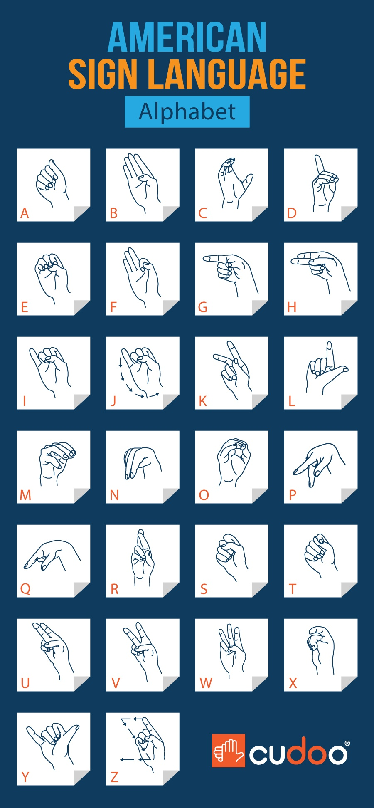

what is American sign language?
American Sign Language (ASL) is a complete, visual language used predominantly in the United States and parts of Canada. It uses handshapes, facial expressions, and body movements to convey meaning, with its own unique grammar and syntax. ASL is not a representation of spoken English but is a distinct language in its own right, vital to the Deaf community's culture and communication.
alphabets
These are the signs and the letter for which they are used:
words
These are the signs and the words for which they are used: